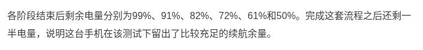
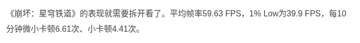

تقنية6 دقائق
فيفو X500 برو ماكس: أول "Pro Max" في سلسلة X، بطارية 8000 مللي أمبير وتصوير مقرّب واستقرار أداء متوسط
تحديث 22 أكتوبر 2026: أُضيف سعر سنغافورة وموعد الطرح هناك.
مقدمة
أعلنت فيفو عن vivo X500 Pro Max في الصين يوم 21 سبتمبر 2026، وبدأ بيعه في 24 سبتمبر بسعر 6,999 يوان لنسخة 12+256 جيجابايت، وهذا يطابق جدول الأسعار المعتمد.
هذه أول مرة تظهر فيها فئة "Pro Max" في سلسلة X. والهاتف من أوائل الأجهزة بمعالج MediaTek Dimensity 9600 Pro المصنّع بدقة 2 نانومتر.
أعلنت فيفو السلسلة عالمياً في 6 أكتوبر، وحددت متجرها الأوروبي 27 أكتوبر موعداً للإطلاق في أوروبا. النسخة العالمية تأتي ببطارية 7800 مللي أمبير بحسب بيان فيفو. وفي سنغافورة أُعلن سعره 2,499 دولارًا سنغافوريًا لنسخة 12GB + 512GB، والحجز حتى 30 أكتوبر والطرح في المتاجر من 31 أكتوبر.

المواصفات الأساسية
| المواصفة | التفاصيل |
|---|---|
| المعالج | MediaTek Dimensity 9600 Pro بدقة 2 نانومتر (4.55 + 4.35 + 3.1 جيجاهرتز) |
| الشاشة | 6.85 بوصة AMOLED بدقة 3168×1440 وتقنية LTPO وتردد 1–144 هرتز |
| الذاكرة والتخزين | 12 أو 16 جيجابايت LPDDR5X Ultra مع 256 جيجابايت حتى 1 تيرابايت UFS 4.1 |
| الكاميرا الرئيسية | 50 ميجابكسل بمستشعر Sony LYT-L910 قياس 1/1.28 بوصة وفتحة f/1.57 |
| كاميرا التقريب | 200 ميجابكسل APO بمستشعر HP0 قياس 1/1.4 بوصة وعدسة 85 مم وفتحة f/2.67 |
| الكاميرا فائقة الاتساع | 50 ميجابكسل بفتحة f/2.0 مع تركيز تلقائي |
| البطارية | 8000 مللي أمبير (نموذجية) و7800 مللي أمبير (اسمية) في النسخة الصينية |
| الشحن | 90 واط سلكي و40 واط لاسلكي |
| الأبعاد والوزن | 163.32×76.82 مم، وسماكة 7.95 أو 8.12 مم، ووزن 225 أو 229 غراماً |
| النظام | OriginOS 7 مبني على Android 17 |
| السعر في الصين | من 6,999 يوان، وحتى 12,999 يوان لحزمة صنّاع المحتوى |
تعارضات في المصادر:
- السعة: صفحة فيفو الصينية تذكر 8000 مللي أمبير كقيمة نموذجية و7800 كقيمة اسمية، والبيان العالمي يذكر 7800 مللي أمبير.
- التقريب البصري: فيفو تذكر 3.5x، بينما كتب موقع The Verge أن العدسة 3.7x.

تقييم الملّاك على Coolapk
لم نعثر على رقم منشور وموثوق لتقييم ملّاك X500 Pro Max على Coolapk. أشار مقال على SMZDM إلى أن تقييمه "متطابق تقريباً" مع تقييم OPPO Find X10 Pro Max، لكنه لم يذكر أي رقم.
المصدر الرقمي الوحيد الذي تحققنا منه بأنفسنا هو تقييم مستخدمي موقع ZOL الصيني:
| المعيار | التقييم |
|---|---|
| تقييم مستخدمي ZOL (42 مقيّماً) | 9.8/10 |
| نسبة تقييمات 4–5 نجوم على ZOL | 97.6% |
| نسبة تقييمات 1–2 نجمة على ZOL | 2.4% |
| نظام OriginOS 7 على Coolapk (تقييم للنظام لا للهاتف) | 3.9 بحسب منشور مدوّن |
العينة على ZOL صغيرة (42 شخصاً). أما رقم 3.9 فيخص نظام OriginOS 7 عموماً، وقد ذكر المقال نفسه أن العينة صغيرة وأن الشكاوى تتركز في التوافق وبطء التحديثات المرحلية.
البطارية والشحن
في اختبار AnTuTu لست ساعات (فيديو 4K، ومكالمة فيديو، وDouyin، وWeibo، وTaobao، وHonor of Kings) بقي 50% من البطارية.

وفي ثلاث ساعات ألعاب متتالية بقي 58%. استهلكت Star Rail وحدها 24% في ساعة واحدة.

قاعدة بيانات "测评君" على Weibo (العدد 117) سجّلت 51% متبقية بعد اختبارها الشامل لخمس ساعات، وزمناً إجمالياً قدره 14 ساعة و49 دقيقة حتى إطفاء الجهاز. اطلعنا على هذه الأرقام من ملخص المنشور فقط لأن الصفحة الكاملة لم تُفتح لدينا.
الشحن أبطأ من المنافسين. وصل الهاتف من 1% إلى 45% خلال 30 دقيقة، واحتاج 65 دقيقة ليصل إلى 100% (اختبار AnTuTu).

الأداء والحرارة
سجّل الهاتف 4,460,761 نقطة على AnTuTu V12.

في الألعاب لمدة 30 دقيقة (اختبار AnTuTu):
- Honor of Kings: متوسط 120.11 إطاراً، وحرارة 35.7 درجة للوجه الأمامي.
- Genshin Impact: متوسط 60.09 إطاراً، وأدنى 1% عند 59.4، وحرارة 40.2 درجة.
- Star Rail: متوسط 59.63 إطاراً، لكن أدنى 1% عند 39.9 مع تقطعات متكررة، والحرارة 46.9 درجة أمامياً و46.4 خلفياً.


المدوّن "瓦特Watt" اختبر الجهاز بوضع BOOST. حقق 144.35 إطاراً في Honor of Kings بنمط 144 إطاراً، أما Genshin مع نافذة WeChat عائمة فنزل متوسطها إلى 57.7 إطاراً بعد تذبذب واضح بدأ عند الدقيقة 18، باستهلاك 6.59 واط. ونصح باستخدام مبرّد خارجي للألعاب الثقيلة.
وأفاد موقع heise الألماني بأن ثبات الأداء في اختبار 3DMark لمدة 30 دقيقة بلغ 50.5%، إذ هبطت النتيجة من 7,449 إلى 3,764. اطلعنا على هذه الأرقام من ملخص البحث فقط.
لم نعثر على اختبار منشور من WHYLAB لهذا الطراز.
الكاميرا
تعرض مراجعة AnTuTu عينات من العدسة الرئيسية 24 مم، والتقريب 85 مم، والملحق الخارجي بعدسة مكافئة لـ400 مم مع قص رقمي حتى 3200 مم.
خلاصة المراجعة: عدسة 85 مم مفيدة لعزل العنصر الرئيسي في الصورة، والقص العالي يُظهر آثار المعالجة بوضوح. أما صور الحفلات بالملحق فيتأثر وضوحها بالإضاءة والدخان.
قارن مقال على SMZDM الهاتف بسابقه X300 Ultra، واعتبر أن الكاميرا الرئيسية والواسعة والتثبيت والشحن السلكي تراجعت، وأن X500 Pro Max "هاتف متخصص في الفيديو" أكثر منه خليفة لهاتف Ultra.
ويمتاز الهاتف في الفيديو بتصوير 4K بمعدل 240 إطاراً للحركة البطيئة، وتسجيل Log بعمق 10 بت، بحسب فيفو وThe Verge.
الشاشة
قاس موقع AnTuTu سطوعاً يدوياً أقصى قدره 800 شمعة، بينما نقل مقال SMZDM عن مدوّن قياساً قدره 870 شمعة مع دقة ألوان JNCD تبلغ 0.24. الفرق بين القياسين ناتج على الأرجح عن اختلاف الأجهزة وطرق القياس.


النظام والبرمجيات
يعمل الهاتف بنظام OriginOS 7، الذي يضيف حركات واجهة "سائلة" ومساحة عمل متعددة النوافذ تتسع لخمسة تطبيقات في الواجهة كحد أقصى، إضافة إلى المساعد "蓝心小V". بعض خلفيات الشاشة المولّدة بالذكاء الاصطناعي مدفوعة بحسب AnTuTu.
تقييمات المصادر الصينية
| المصدر | ما اختبره | النتيجة | الرابط |
|---|---|---|---|
| AnTuTu 安兔兔 | الأداء والألعاب والبطارية والشحن | AnTuTu V12: 4,460,761. Honor of Kings: 120.11 إطارًا وأدنى 1% عند 109.2 و35.7 درجة. Genshin: 60.09 إطارًا وأدنى 1% عند 59.4 و40.2 درجة. Star Rail: 59.63 إطارًا وأدنى 1% عند 39.9 و46.9 درجة أمامية. 6 ساعات مختلطة: بقي 50%. 3 ساعات ألعاب: بقي 58%. الامتلاء الظاهر في 65 دقيقة. | الرابط |
| مقال تجميعي على Sina Finance (مصدر الاختبار غير مسمى) | البطارية | يذكر اختبارًا من "جهة ثالثة" استمر 14 ساعة و49 دقيقة حتى الإغلاق، وبقاء 51% بعد 5 ساعات استخدام ثقيل، دون تسمية الجهة. | الرابط |
| Coolapk 酷安 | تقييم الملّاك | الأرقام في قسم تقييم الملّاك أعلاه. موقع Coolapk محجوب، ولم نجد ناقلًا موثقًا يعرض أرقام هذا الهاتف. | - |
| WHYLAB 微机分، Geekerwan 极客湾، ZOL 中关村在线، CNMO 手机中国، ITHome IT之家، PConline، Zealer، IT168، Sina Tech | - | لم يُختبر بعد. لم نعثر على اختبار منشور. | - |
تتفق المصادر على أن البطارية من أقوى نقاط الهاتف، فقد بقي نحو 50% في الاختبارات الطويلة. نقطة الضعف المسجلة هي Star Rail: أدنى 1% عند 39.9 وحرارة أمامية 46.9 درجة في AnTuTu. أرقام المقال التجميعي غير منسوبة، فتُقرأ بحذر.
آخر تحديث للتقييمات: 22 أكتوبر 2026


نقاط القوة والضعف
- نقطة قوة: نتائج بطارية جيدة (50% متبقية بعد ست ساعات في اختبار AnTuTu).
- نقطة قوة: تقريب 200 ميجابكسل مع ملحق خارجي، وقدرات فيديو متقدمة.
- نقطة قوة: شاشة 2K بسطوع يدوي مرتفع.
- نقطة ضعف: شحن بطيء نسبياً (65 دقيقة حتى الامتلاء).
- نقطة ضعف: حرارة 46.9 درجة وتقطعات في Star Rail، وثبات 50.5% في 3DMark.
- نقطة ضعف: سعر النسخ العليا مرتفع، رغم أن أسعار القنوات التجارية انخفضت؛ فقد أفاد مقال SMZDM بأن نسخة 16+512 تُعرض بنحو 7,500 يوان مقابل 8,499 رسمياً.
نصائح للمشتري في الخليج (النسخة الصينية)
ما يلي نصائح عامة:
- الشبكات: صفحة فيفو الصينية تذكر نطاقات 5G مثل n1 وn3 وn28A وn41 وn78، ونطاقات 4G مثل B1 وB3 وB7 وB20 وB28A وB40. تحقق من نطاقات مشغّلك.
- خدمات Google: OriginOS الصيني لا يأتي عادة بخدمات Google جاهزة. لم نتحقق من طريقة تثبيتها على هذا الطراز تحديداً.
- ميزة الأقمار الصناعية (Beidou) في نسخ 1 تيرابايت تعمل مع شركة China Mobile فقط بحسب فيفو، فلا قيمة لها خارج الصين.
- الضمان: الأجهزة المستوردة من الصين لا يغطيها عادة ضمان الوكيل المحلي. والنسخة العالمية متاحة رسمياً، وقد تكون الخيار الأسلم رغم أن بطاريتها أصغر قليلاً.
الخلاصة
X500 Pro Max هاتف تصوير وفيديو بالدرجة الأولى، وبطاريته تكفي يوماً طويلاً. نقاط ضعفه واضحة: شحن أبطأ، وثبات متوسط في الألعاب الثقيلة.
تقييم المستخدمين على ZOL مرتفع لكنه مبني على عينة صغيرة، ولا يتوفر رقم موثوق من Coolapk.
للمصوّر وصانع المحتوى خيار مقنع، أما للاعب المتطلّب فهناك هواتف أكثر ثباتاً.
#midroid5G #vivo